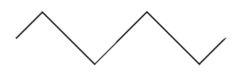
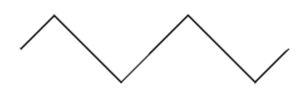

Synthesizers began in the 60's and 70's using raw analog circuits to produce music that had never been heard before. However, these machines were (to most) difficult to use and people wanted easy access and instant gratification. This led to the development of digital synthesizers, however a lot of artists felt restricted by this new format of presets. This is why recently there's been a movement back to the old sounds of the 60's and 70's. To learn more about analog synthesizers, click here.
1. What is the name of a synthesizer with multiple voices?
Monophonic2. What is the voice of an analog synthesizer?
Voltage Controlled Osscilator3. Which of the following is a triangle wave?

 
